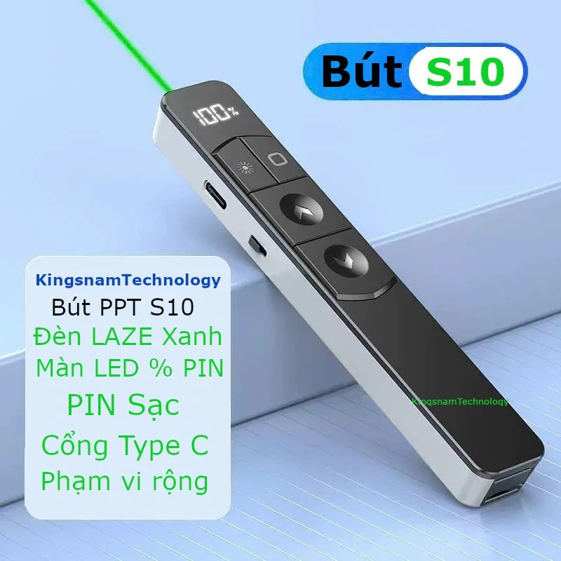

Bút Thuyết Trình Không Dây Laze Xanh S10 PPT Pin Sạc - Clicker Cao Cấp
SKU: 30180094
169.000₫
Còn hàng
🚚 Giao nhanh toàn quốc – Hỗ trợ bảo hành 6 tháng
🎁 Tặng kèm cáp sạc và đầu chuyển Type C
📋 Mô tả sản phẩm
Bút Thuyết Trình Không Dây Laze Xanh S10 PPT – phụ kiện không thể thiếu cho các buổi họp, giảng dạy, thuyết trình chuyên nghiệp. Thiết kế tinh tế, hiện đại và dễ sử dụng.
✨ Tính năng nổi bật
- Bề mặt nhám chống trơn, cảm giác cầm chắc tay.
- Khoảng cách điều khiển lên tới 100 mét – ổn định, chính xác.
- Màn hình hiển thị kỹ thuật số giúp theo dõi mức pin theo thời gian thực.
- Tích hợp đầu thu USB nhỏ gọn, gắn dưới thân bút tiện lợi.
- Cổng sạc Type-C – sạc nhanh, tiện dụng.
- Tương thích với Windows, Mac OS, Android và Linux.
- Phù hợp nhiều tình huống: giảng dạy, thuyết trình, hội nghị, báo cáo...
⚙️ Thông số kỹ thuật
- Tia laser: S7 đỏ / S10 xanh
- Khoảng cách điều khiển: 100m
- Dung lượng pin: 180mAh
- Điện áp hoạt động: 3.7V
- Hệ điều hành hỗ trợ: Windows XP/7/8/10, MacOS, Linux, Android
- Bộ sản phẩm gồm: 1 bút, 1 dây sạc, 1 đầu chuyển Type-C sang Type-A, 1 hộp chống sốc
Tình trạng: 100% hàng mới – cao cấp, bền bỉ, tiện dụng cho người dùng văn phòng và giáo viên.